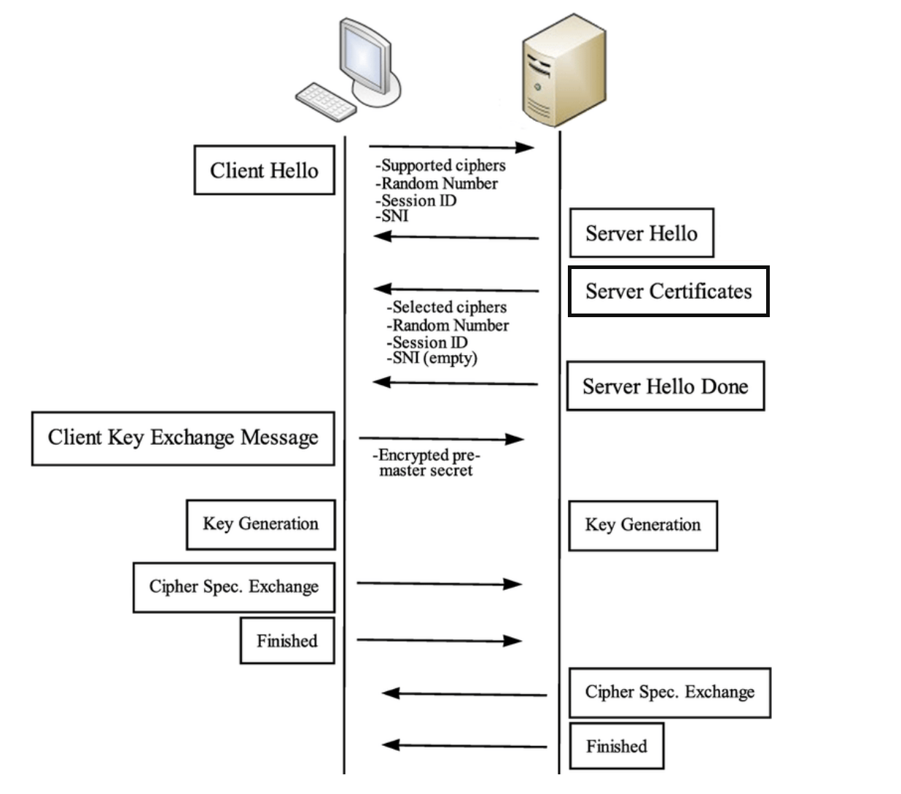

Skip to content
obsidian-mkdocs template
Protokół Handshake
Initializing search
obsidian-mkdocs template
index
2024 03 05
2024 04 22
Amanda
Analizatory Komunikacji Sieciowej
AppImage
Archiwizacja a wirtualizacja
Archiwizacja i odtwarzanie
BackupPC
Biblioteki
Borg Backup
Btrfs
Business ProcesS Execution Language
Ciągła ochrona danych
DEB vs RPM
DOM
Debian
Delta RPM
Deskryptor
Docker
Enterprise Service Bus
EtherType
FreeBSD
FreeRADIUS
Funkcjonalność systemów CAD
Gentoo Portage
Gniazda Sieciowe PF_NETLINK
Gniazda Sieciowe PF_PACKET
Gniazda Sieciowe
Gwarancja wykonania (semantyka błędu)
HTML
HTML5
HTTP 2
HTTP Authentication
ISO & OSI
Istota Podejścia Obiektowego
Java Business Integration
Kerberos
Klasyczny Monitor
Klik
LVM
Mac OS X - Time Machine
Mac OS X
N
Network Attached Storage
OCaml
Obsługa Interfejsów Sieciowych
One Click Installaction (openSUSE)
OpenPKG
Oprogramowanie uzupełniające
PS_wyklad
Pakiet rdiff-backup
Pakiety Oprogramowania
Pakiety Źródłowe (SRPM)
Pamięć Podręczna Protokołu ARP
Paradygmat Interakcji Pomiędzy Zdalnymi Jednostkami
Patch RPM
Plik spec
Podstawowe Gniazda Sieciowe
Podstawowe Własności Systemu Rozproszonego
Problem z zależnościami
Process
Programowanie Sieciowe - 01
Programowanie współbieżne
Protokół Handshake
Przekazywanie wiadomości (komunikatów)
Przezroczystość Migracji
Przezroczystość
QUIC
RADIUS
REST
RPC
RPM
RPM5
Ramka Sieci Ethernet II
Repozytoria pakietów
SOAP
SSL & TLS
Service Oriented Architecture
Stałe AF oraz PF
Storage Area Network
Struktura katalogów
Synchroniczność komunikacji
Synchronizacja
System Rozproszony
Systemowe Zarządzanie Oprogramowaniem
Systemy plików a archiwizacja
TIWPR - Projekt - Dokumentacja usługi
TLS
Tab
Tablica Routingu
Thin Provisioning
Trwałość Komunikacji
UDDI
Unison
Untitled
WS-Security
WSDL
Warstwa Łącza Danych
Web Services Standards
Web Services
Web Standarization Bodies
Web Storage
WebSocket
Wywoływanie metod zdalnych
Wyzwalacze (triggers)
Wątek
XAR
XForms
XHTML 2.0
XHTML
XML
XSL
ZMQ
Zarządcy pakietów
Zarządzanie oprogramowaniem
Zdalne Wywoływanie Procedur
Zgodne Rozgłaszanie Niezawodne FIFO
Zmienne Warunkowe
Zsync
ioctl(2)
ip(8)
libnet
libpcap
rsync
sockaddr_ll
socket(2)
tar
tcpdump(1)
Algorytmy Rozproszone
Algorytmy Rozproszone
Wykład 2
Angielski
Angielski
Sub2
Test1
Ćw 1
Bezpieczeństwo Systemów Rozproszonych
Bezpieczeństwo Systemów Rozproszonych
Lab 0 Wstęp
Excalidraw
Excalidraw
Drawing 2024 03 07 14.10.02.excalidraw
ZSK w 1.excalidraw
Komunikacja nieustanna asynchroniczna.excalidraw
Model komunikacji.excalidraw
Łącze komunikacji.excalidraw
Metody Bezpiecznego Programowania
Metody Bezpiecznego Programowania
Lab 1 Wprowadznie
Wykład 1 Wprowadznie
Narzędzia przetwarzania rozproszonego
Narzędzia przetwarzania rozproszonego
Lab 1 2 Wprowadzenie do Aplikacji Wielowątkowych
Wykład 1 Sylabus
Programowanie Sieciowe
Programowanie Sieciowe
Lab 1 Init
SRC #Sem1 #PS #wykład
Technologie internetowe w przetwarzaniu rozproszonym
Technologie internetowe w przetwarzaniu rozproszonym
Lab 1 HTML5
Lab 2 Web APIs
SRC #Sem1 #TIWPR #wykład
Zarządzanie Systemami Komputerowymi
Zarządzanie Systemami Komputerowymi
Lab 1 Systemy plików
Lab 2
Wykład 1 Systemy Plików
Blog
Blog
Blog
Archive
Protokół Handshake
¶
SRC #Sem1 #BSR #wyklad
¶
